UI review gallery — built
project (16)
Every sheet here was verified by shot.mjs (target existed, expectation held, pixels changed). Missed captures are listed in coverage.md, never shown here.
project
project · plugin-controls-context-projects-skills-wide 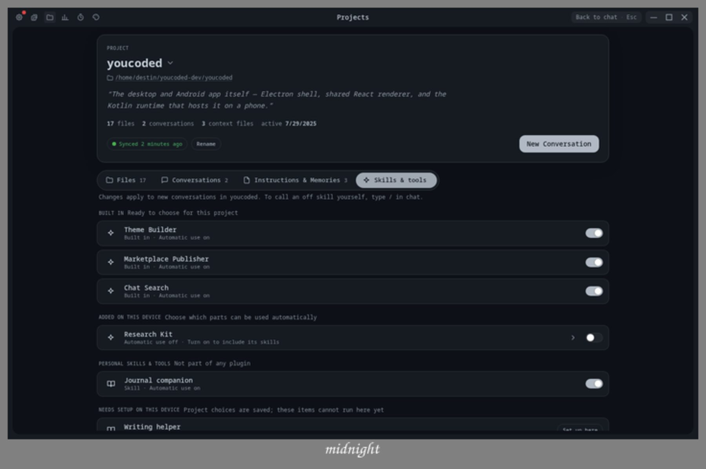
project · plugin-controls-phone-projects-skills-phone-bottom 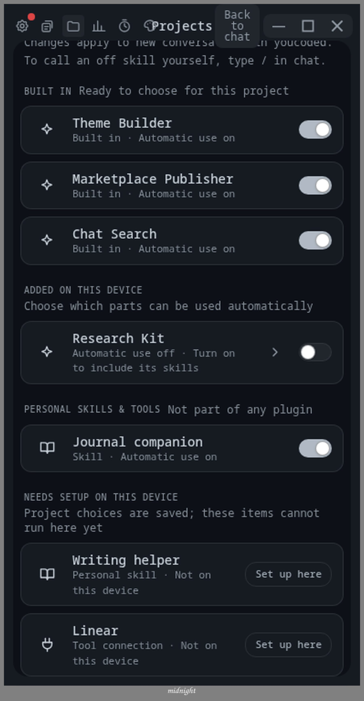
project · plugin-controls-phone-projects-skills-phone 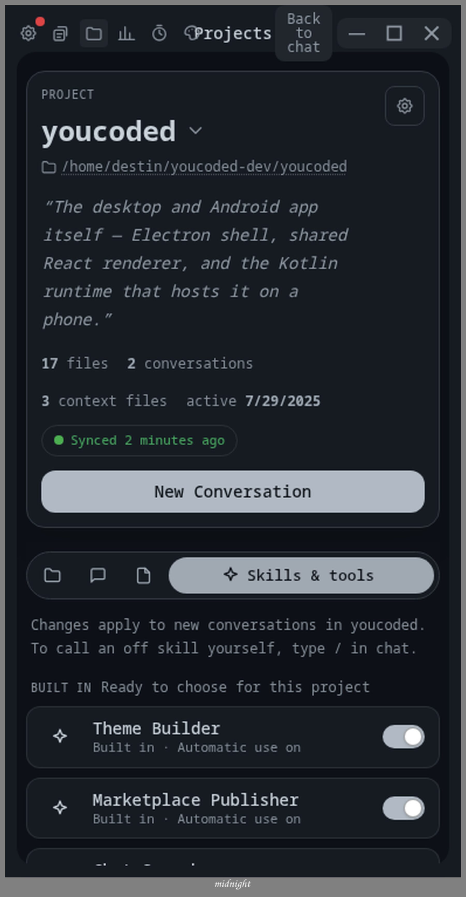
project · plugin-controls-siblings-conversations 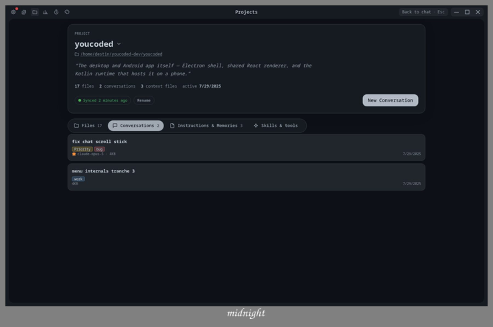
project · plugin-controls-siblings-files 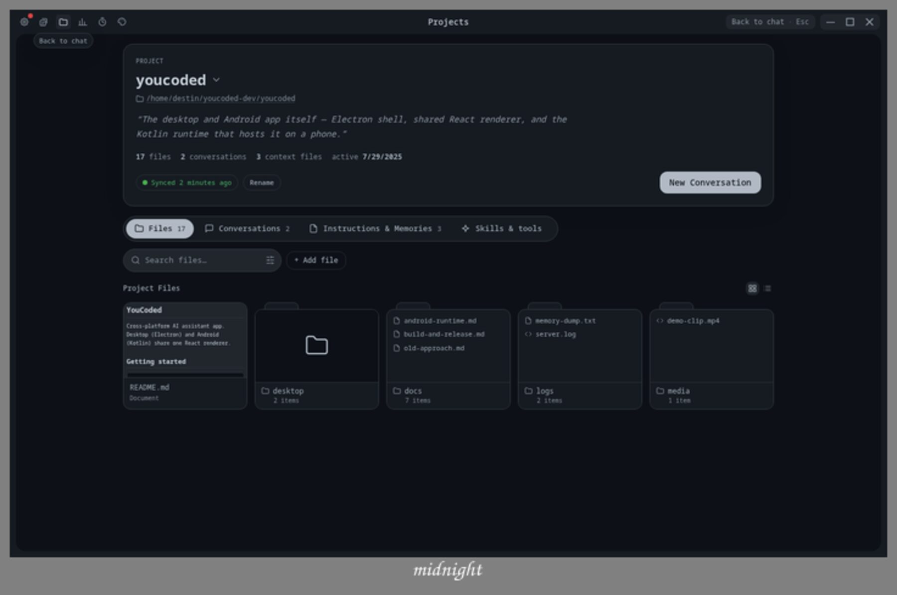
project · plugin-controls-siblings-instructions 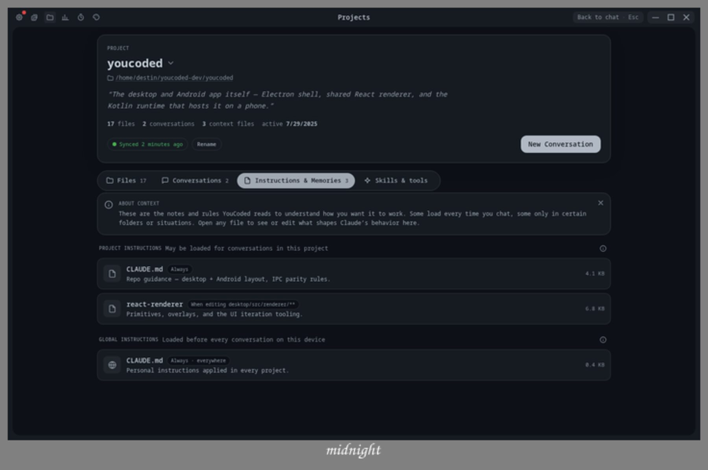
project · plugin-drawer-phone-skills-drawer-phone-scroll 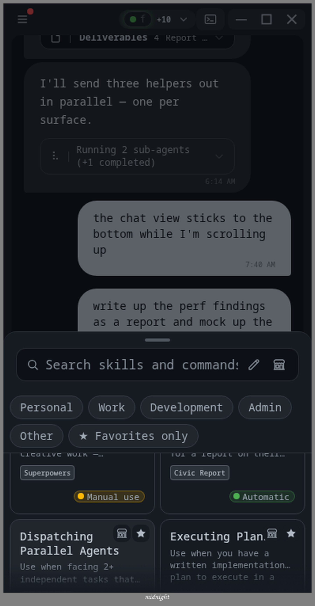
project · plugin-drawer-phone-skills-drawer-phone 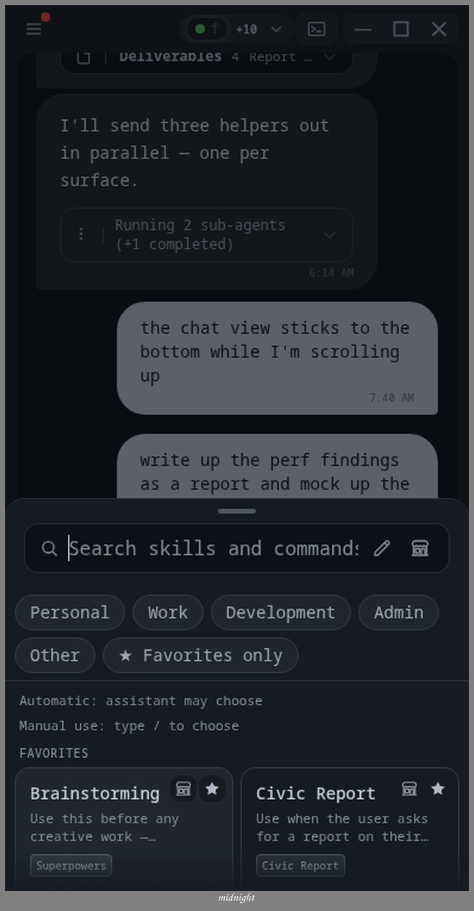
project · plugin-drawer-route-unavailable-opens-project-setup 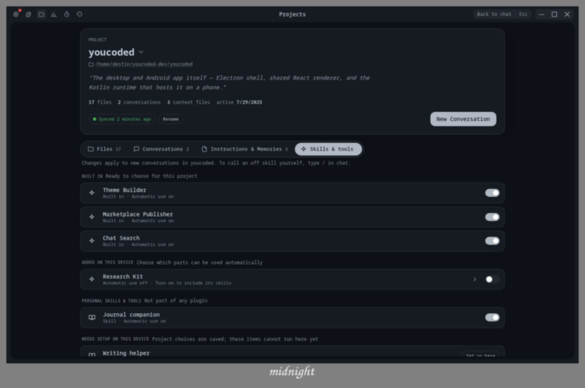
project · plugin-drawer-skills-drawer 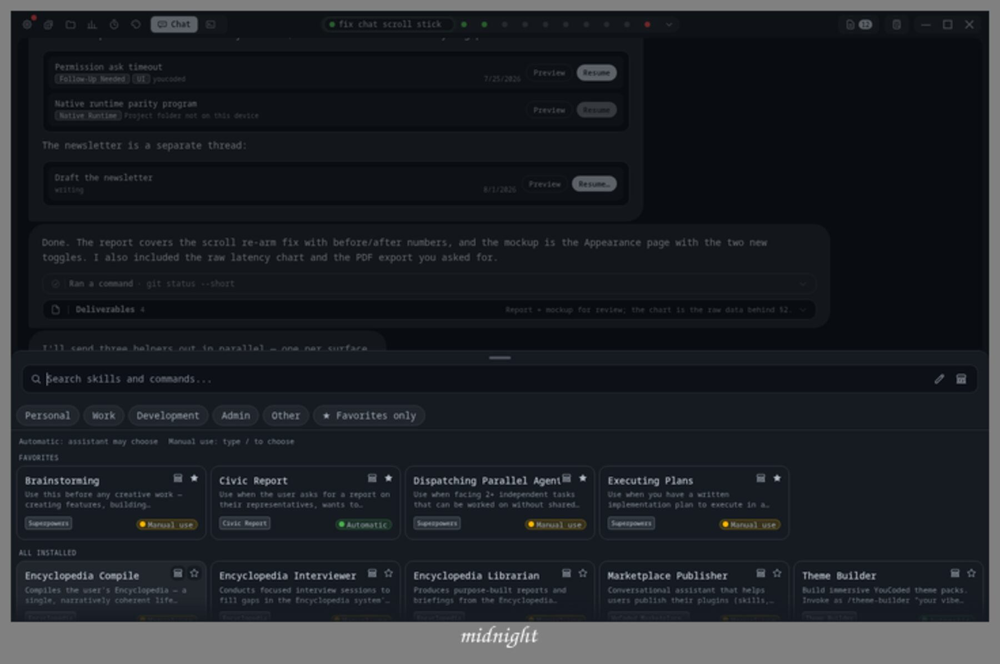
project · plugin-marketplace-choices-two-project-choices 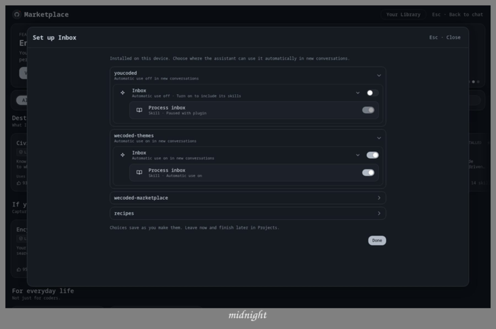
project · plugin-marketplace-install-inbox-after-install 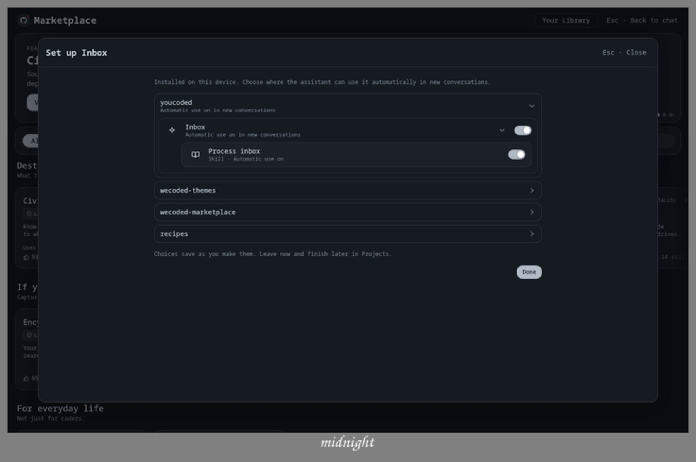
project · plugin-marketplace-install-inbox-before-install 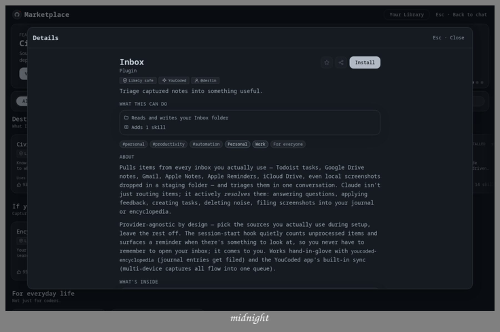
project · plugin-marketplace-install-phone-inbox-install-phone 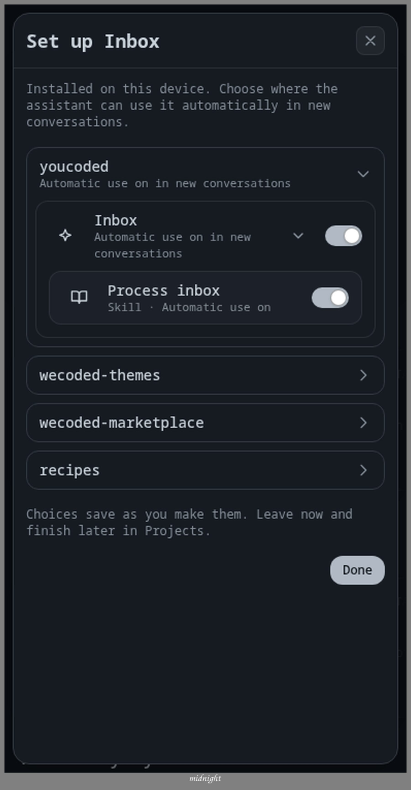
project · plugin-risk-confirm-risk-confirm 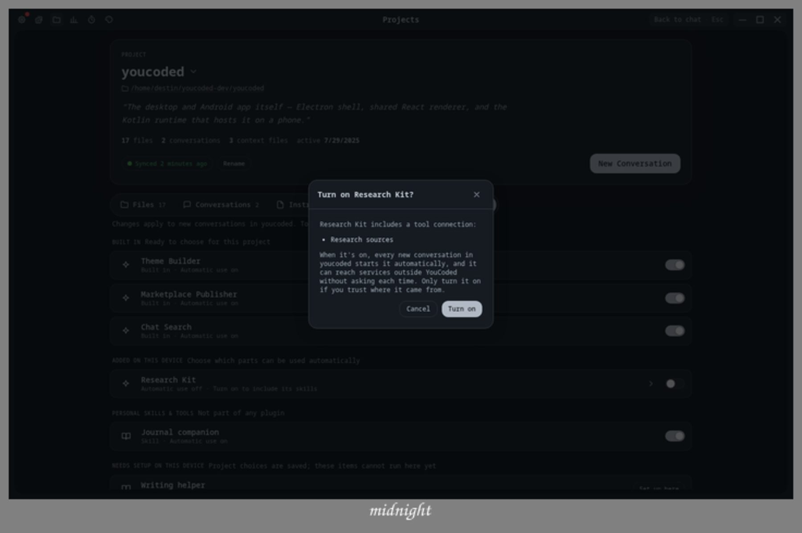
project · plugin-setup-rows-phone-setup-open-phone 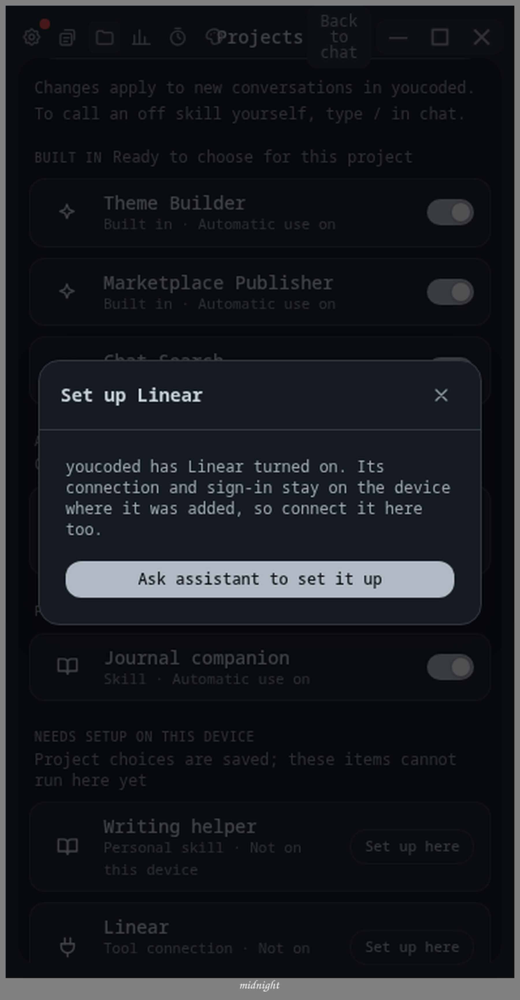